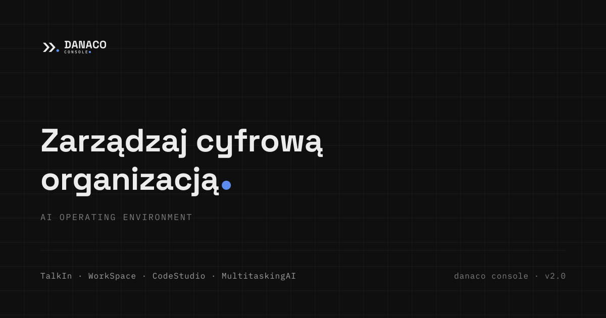
Obraz Open Graph
1200 × 630 pxMiniatura karty odnośnika w serwisach i komunikatorach. Pierwszy, często jedyny kontakt odbiorcy z marką.
01 · Fundament
Nośnik nie jest kampanią. Każdy napis pochodzi z dokumentacji produktu, a kropka sygnału jest jedynym elementem barwnym kadru — wszystko pozostałe mieści się w skali neutralnej.
Jeden akcent [NIENEGOCJOWALNE]. Tło, typografia, reguły, siatka i ramki są w skali szarości bez wyjątku. Barwa sygnału występuje wyłącznie jako kropka znaku. Podział wykonuje reguła 1 px w barwie obrysu.
| Rola | Nośnik ciemny | Nośnik jasny | Żeton |
|---|---|---|---|
| Tło nośnika | #0F0F0F | #F3F4F6 | --dn-tlo |
| Pole medalionu | #111317 | #111317 | --dn-rama |
| Farba znaku, tekst główny | #ECECEC | #16181D | --dn-tekst |
| Tekst pomocniczy | #9E9E9E | #616161 | --dn-tekst-2 |
| Metadane, deskryptor | #7C7C7C | #7C7C7C | --dn-tekst-3 |
| Reguła, obrys | #2A2A2A | #E3E3E3 | --dn-obrys |
| Kropka sygnału | #5C8CEC | #3B6FE0 | --dn-kropka |
| Nośnik | Kadr | Moduł | Kolumn × wierszy | Margines |
|---|---|---|---|---|
| Open Graph | 1200 × 630 | 48 | 25 × 13,1 | 80 |
| Baner LinkedIn | 1584 × 396 | 44 | 36 × 9 | 120 |
| Tapeta | 2560 × 1440 | 80 | 32 × 18 | — |
| Tapeta | 3840 × 2160 | 120 | 32 × 18 | — |
| Tło slajdu | 1920 × 1080 | 60 | 32 × 18 | 120 |
| Karta tytułowa | 1600 × 900 | 50 | 32 × 18 | 100 |
| Ekran powitalny | 1280 × 800 | 40 | 32 × 20 | — |
| Papier firmowy | 210 × 297 mm | 5 mm | 42 × 59,4 | 20 mm |
| Wizytówka | 90 × 50 mm | 2,5 mm | 36 × 20 | 7 mm |
[Imię i nazwisko] i [stanowisko].02 · Decyzja
Konfiguracje A–H są zamknięte (księga znaku, rozdz. 7). Nośnik nie tworzy własnego układu — wybiera jeden z gotowych.
| Nośnik | Konfiguracja | Wariant barwny | Wielkość znaku |
|---|---|---|---|
| Obraz Open Graph | C lockup poziomy | na ciemnym / podstawowy | 131 px |
| Baner LinkedIn | A sygnet + napis | na ciemnym / podstawowy | 132 px |
| Tapeta | H znak wodny | mono z żywą kropką | 550 px |
| Slajd tytułowy | D lockup pionowy | na ciemnym / podstawowy | 340 px |
| Slajd treściowy | E lockup kompaktowy | na ciemnym / podstawowy | 150 px |
| Karta tytułowa | C lockup poziomy | na ciemnym / podstawowy | 182 px |
| Sygnatura poczty | E lockup kompaktowy | podstawowy / na ciemnym | 168 px |
| Papier firmowy — arkusz 1 | C lockup poziomy | podstawowy | 45 mm |
| Papier firmowy — arkusz kolejny | E lockup kompaktowy | podstawowy | 26 mm |
| Wizytówka awers | E lockup kompaktowy | na ciemnym | 28 mm |
| Wizytówka rewers | A sygnet | podstawowy | 11 mm |
| Ekran powitalny | D lockup pionowy | na ciemnym | 180 px |
| Awatar kwadrat / koło | A sygnet w medalionie | na ciemnym | 208 / 176 px |
| Awatar ≤ 48 px | A′ sygnet uproszczony | na ciemnym | — |
03 · Galeria
Każdy nośnik w podglądzie z etykietą wymiarów. Przycisk siatka nakłada podziałkę konstrukcyjną, przycisk powiększ otwiera nośnik w pełnej skali. Przełącznik motywu podmienia warianty barwne tam, gdzie istnieją.

Miniatura karty odnośnika w serwisach i komunikatorach. Pierwszy, często jedyny kontakt odbiorcy z marką.
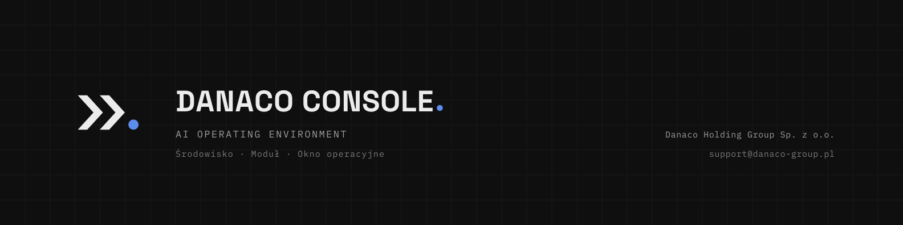
Tło profilu i strony firmowej. Kadr 4 : 1 oglądany w skali 30–60 %; awatar profilu osobowego zasłania lewe ≈ 440 px.
Tło stanowiska pracy Operatora. Groty schodzą do krycia 7 %, kropka sygnału zostaje przy 90 % — pulpit pokazuje jeden punkt, w którym biegnie praca.
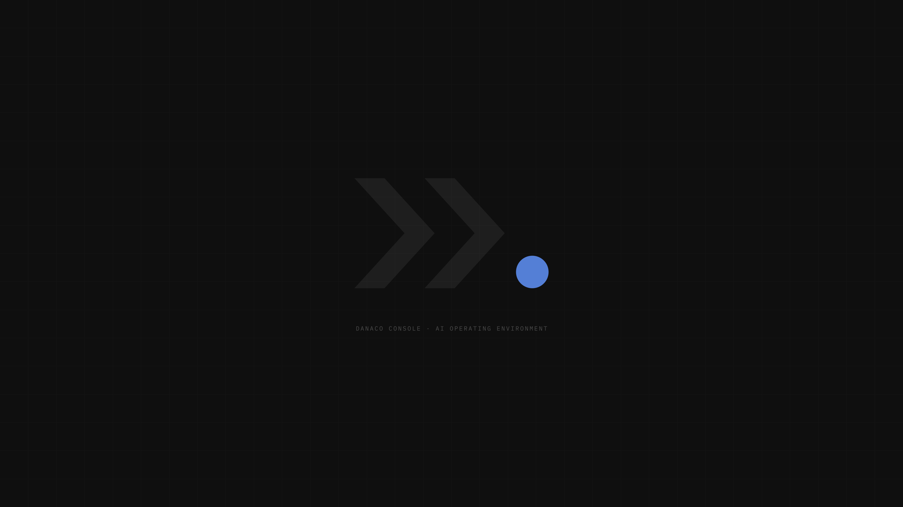
Kompozycja względna identyczna z wersją 2560 — moduł siatki rośnie proporcjonalnie (32 × 18 komórek w obu).
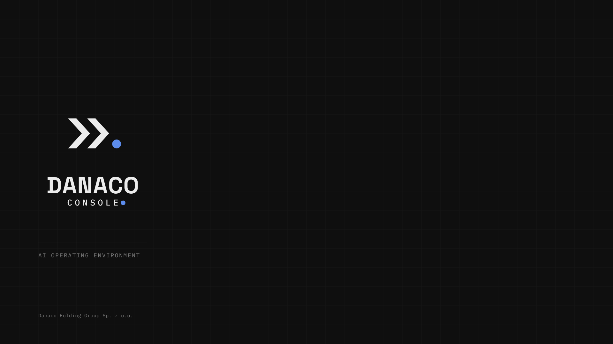
Podkład slajdu otwierającego. Lockup pionowy 340 px odpowiada zaleceniu księgi (60 mm na slajdzie); prawe dwie trzecie kadru pozostają puste.
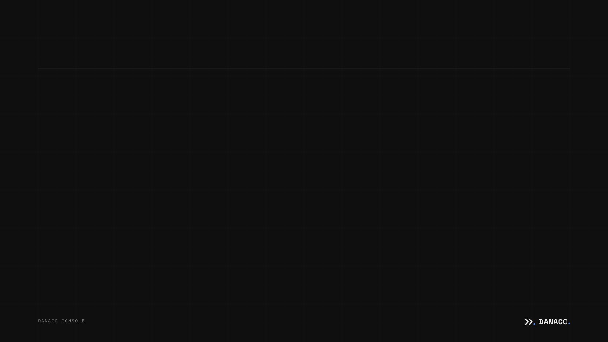
Podkład slajdu roboczego. Reguła tytułu na y = 216 px, znak kompaktowy 150 px w prawym dolnym rogu, poza polem treści.
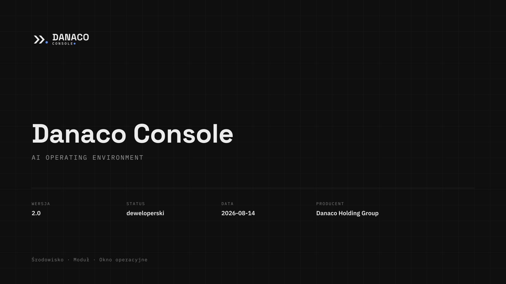
Pierwsza strona dokumentu i miniatura w indeksie. Niesie metrykę wydania: wersja, status, data, producent — wartości wyłącznie z metryki produktu.
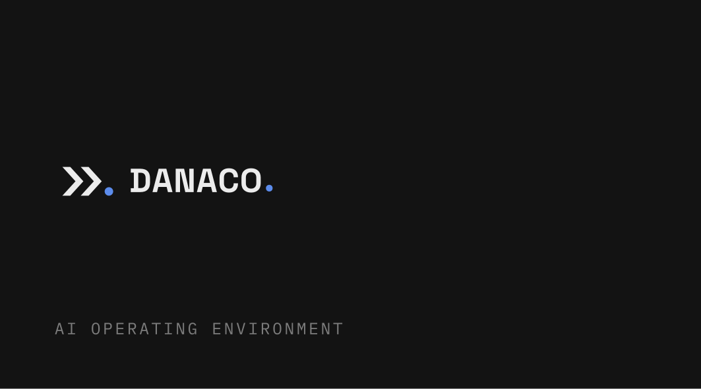
Strona atramentowa (#111317). Lockup kompaktowy 28 mm — powyżej minimum druku 22 mm. Wersja ze spadem 96 × 56 mm z paserami w osobnym pliku.
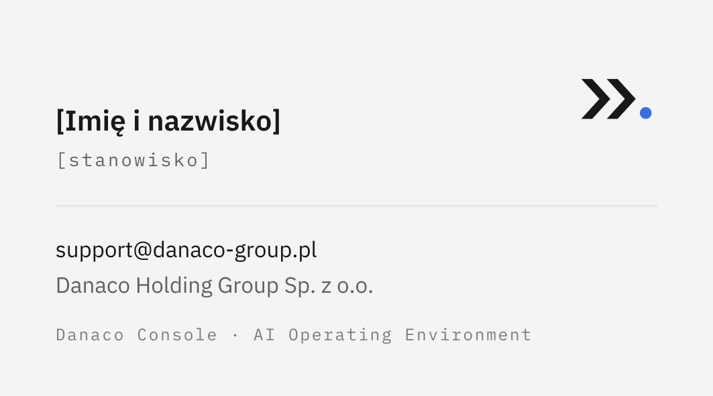
Strona papierowa. Pola użytkownika zapisane jako [Imię i nazwisko] i [stanowisko] — nigdy jako osoby przykładowe.
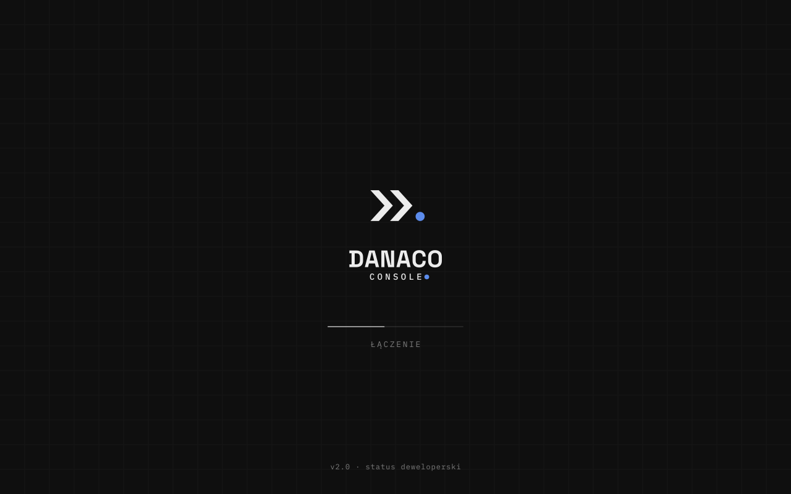
Okno startowe w stanie Łączenie. Tor postępu jest w bieli o kryciu 55 %, nie w sygnale — kropka znaku pozostaje jedynym akcentem kadru.
Ikona profilu i medalion systemu. Farba 52 % boku, wyśrodkowana osią optyczną x = 50,75 j., nie środkiem kadru.
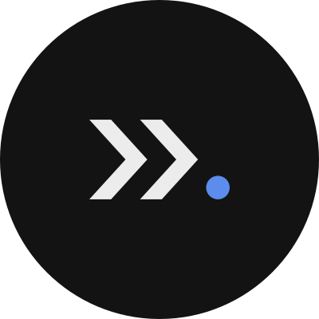
Maska okrągła odcina narożniki, więc farba schodzi do 44 % średnicy — znak potrzebuje większego luzu bocznego niż w kwadracie.
04 · Nośnik żywy
Poniżej stoi działający kod sygnatury — dokładnie ten, który trafia do ustawień klienta poczty. Przycisk „Kopiuj kod" kopiuje znaczniki wraz z osadzonym znakiem, bez odnośników zewnętrznych.
Dlaczego tabela i style w atrybutach. Outlook dla Windows
renderuje wiadomości silnikiem Worda: nie liczy flex ani
grid. Gmail usuwa <style> z nagłówka. Znak
jako SVG bywa blokowany, a plik zewnętrzny wymaga zgody odbiorcy — stąd
PNG 2× w data: URI.
![Danaco Console]()
|
|
| [Imię i nazwisko] | |
| [stanowisko] | |
|
|
|
|
Danaco Holding Group Sp. z o.o. support@danaco-group.pl |
|
| Danaco Console · AI Operating Environment |
![Danaco Console]()
|
|
| [Imię i nazwisko] | |
| [stanowisko] | |
|
|
|
|
Danaco Holding Group Sp. z o.o. support@danaco-group.pl |
|
| Danaco Console · AI Operating Environment |
| Zagadnienie | Rozstrzygnięcie | Powód |
|---|---|---|
| Układ | tabela role="presentation" | silnik Word nie liczy flex ani grid |
| Style | wyłącznie atrybut style | Gmail usuwa <style> z nagłówka |
| Znak | PNG 2× w data: URI | SVG blokowany, plik zewnętrzny wymaga zgody |
| Reguła | komórka height="1", font-size: 0 | Outlook wymusza minimalną wysokość wiersza |
| Odnośnik | mailto: z jawnym color | klienty nadpisują barwę odnośników |
| Wersja ciemna | osobny plik, tło #111317 | automatyczna inwersja psuje kontrast znaku |
Otwórz plik sygnatury jasnej · Otwórz plik sygnatury ciemnej
05 · Nośnik żywy
Arkusz 210 × 297 mm w rzeczywistych milimetrach, przeskalowany do szerokości okna. Marginesy 20 mm, nagłówek 32 mm, stopka 18 mm, pole treści maksymalnie 150 mm.
Miejscowość, data
@page { size: A4 portrait; margin: 0; }
.arkusz {
width: 210mm; height: 297mm; padding: 20mm;
display: flex; flex-direction: column;
background: #FFFFFF; color: #16181D;
break-after: page;
}
.arkusz-naglowek { height: 32mm; border-bottom: .25mm solid #E3E3E3; padding-bottom: 6mm; }
.arkusz-znak { width: 45mm; height: auto; display: block; }
.arkusz-tresc { flex: 1 1 auto; padding-top: 12mm; max-width: 150mm;
font-size: 10.5pt; line-height: 1.55; }
.arkusz-stopka { height: 18mm; border-top: .25mm solid #E3E3E3; padding-top: 4mm;
font-family: 'IBM Plex Mono', monospace; font-size: 7pt;
letter-spacing: .06em; color: #7C7C7C; }
.arkusz-strona::after { content: counter(page, decimal-leading-zero); }
@media print {
body { background: #FFFFFF; }
.arkusz { box-shadow: none; }
}Otwórz pełny plik papieru firmowego (dwa arkusze, druk do PDF)
06 · Nośnik żywy
Dwa układy — tytułowy i treściowy — jako żywe, przełączalne podglądy.
Wszystkie miary w jednostce --u = 1/1920 szerokości slajdu,
więc szablon skaluje się bez utraty proporcji.
Otwórz pełny szablon slajdów (druk do PDF w orientacji poziomej)
07 · Podkład
Znak wodny nie jest znakiem marki w użyciu — jest fakturą identyfikującą pochodzenie arkusza. Leży pod treścią, więc pole ochronne go nie obowiązuje.
Mono bez wyjątku. W znaku wodnym kropka przyjmuje barwę grotów. To jedyne — obok wariantów mono — miejsce, gdzie kropka traci barwę sygnału. Powód: kolorowy punkt pod literą czyta się jako błąd druku, nie jako akcent.
Podkład arkusza jasnego. Atrament przy 8 % czyta się z tą samą siłą, co biel przy 10 % — percepcja krycia nie jest symetryczna.
Podkład arkusza ciemnego i podkład slajdu. Krycie wyższe o dwa punkty, żeby wyrównać percepcję.
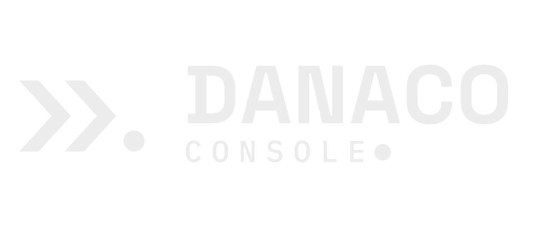
Strona tytułowa i duży format. Obrót wyłącznie o 0° — znak wodny nie jest obracany.
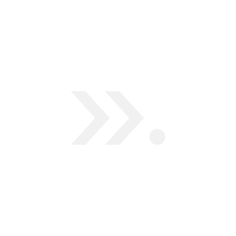
Deseń tła dokumentu. Krycie niższe o dwa punkty, bo powtórzenie sumuje wrażenie gęstości.
<svg xmlns="http://www.w3.org/2000/svg" width="96" height="96" viewBox="0 0 96 96"
role="img" aria-label="Danaco Console — znak wodny">
<g fill="#16181D" fill-opacity="0.08">
<path d="M12 26 H24 L44 48.0 L24 70 H12 L32 48.0 Z"/>
<path d="M40 26 H52 L72 48.0 L52 70 H40 L60 48.0 Z"/>
<circle cx="83" cy="63.5" r="6.5"/>
</g>
</svg>08 · Miara
Definicja modułu bez zmian: X = wysokość grotu, pole ochronne = ½X. Na nośniku dochodzi druga reguła, mocniejsza: margines nośnika ≥ pole ochronne znaku.
| Nośnik | Konfiguracja | Szer. farby | X | ½X | Margines | Zapas |
|---|---|---|---|---|---|---|
| Open Graph | C poziomy 0,62 | 131,1 px | 18,2 | 9,1 | 80 px | 8,8 × |
| Baner LinkedIn | A sygnet 132 px | 106,6 px | 60,5 | 30,2 | 120 px | 4,0 × |
| Karta tytułowa | C poziomy 0,86 | 181,9 px | 25,2 | 12,6 | 100 px | 7,9 × |
| Slajd tytułowy | D pionowy 340 px | 340,0 px | 94,1 | 47,0 | 120 px | 2,6 × |
| Slajd treściowy | E kompakt 150 px | 150,0 px | 19,8 | 9,9 | 120 px | 12,1 × |
| Papier firmowy | C poziomy 45 mm | 45,0 mm | 6,2 | 3,1 | 20 mm | 6,5 × |
| Wizytówka awers | E kompakt 28 mm | 28,0 mm | 3,7 | 1,9 | 7 mm | 3,7 × |
| Awatar kwadrat | A sygnet 208 px | 208,0 px | 118,1 | 59,0 | 96 px | 1,6 × |
| Awatar koło | A sygnet 176 px | 176,0 px | 99,9 | 50,0 | 112 px | 2,2 × |
Awatar kwadratowy jest najciaśniejszym nośnikiem katalogu (zapas 1,6 ×) — świadomie, bo bywa oglądany w skali 24 px i znak musi wypełnić kadr. Znak wodny jest jedynym nośnikiem, którego pole ochronne nie obowiązuje.
09 · Ciągłość
Cztery pliki z pierwszego podejścia do nośników. Opracowanie zachowuje ich język i naprawia trzy rzeczy: rozdzielczości, dyscyplinę jednego akcentu oraz źródło danych kontaktowych.
| Plik źródłowy | Wymiary | Ocena | Następca |
|---|---|---|---|
og-image.png | 1200 × 630 | kompozycja i typografia zgodne z kierunkiem — do przeniesienia bez zmian | obraz-og-1200x630 |
banner-linkedin.png | 3168 × 792 | to 2 × 1584 × 396, czyli wariant podwójnej gęstości; zawiera pas barwny przy dolnej krawędzi (drugi akcent) i adres serwisu spoza metryki produktu | baner-linkedin-1584x396 |
tapeta-2560.png | 2560 × 1440 | znak w pełnym kryciu — czyta się jako znak, nie jako podkład pulpitu | tapeta-2560x1440 |
tlo-slajdu.png | 1920 × 1080 | poprawne tło treściowe; brak wersji tytułowej i wariantów jasnych | tlo-slajdu-*-1920x1080 |
#0F0F0F i siatka o bardzo niskim kryciu,10 · Pliki
SVG jest źródłem, PNG wynikiem generatora — nigdy odwrotnie. Każda zmiana nośnika przechodzi przez generator, a nie przez ręczną edycję pliku wynikowego.
cd 03-marka/zastosowania python3 generator-zastosowan.py # 30 SVG + 30 PNG python3 generator-sygnatury.py # 2 HTML + 2 PNG znaku
| Plik | Rola |
|---|---|
html/sygnatura-poczty-jasna.html | gotowa do wklejenia sygnatura, tło białe |
html/sygnatura-poczty-ciemna.html | jw., tło #111317 |
html/papier-firmowy-a4.html | dwa arkusze A4 z regułami @media print |
html/szablon-slajdow.html | slajd tytułowy i treściowy, przełączalne |
Opracowanie tekstowe: zastosowania-marki.md ·
Podstawa konstrukcyjna: księga znaku ·
Godła pochodne: emblematy i ikony.
Galerię dwunastu nośników marki Danaco Console: obraz Open Graph, baner LinkedIn, tapety w dwóch rozdzielczościach, tła slajdu w dwóch układach, kartę tytułową dokumentacji, sygnaturę poczty elektronicznej, papier firmowy A4, wizytówkę, ekran powitalny aplikacji, awatar w dwóch kadrowaniach, szablon slajdów prezentacji i znak wodny.
03-marka/ksiega-znaku.md 5–8 — pole ochronne, wielkości minimalne, konfiguracje A–H, kolorystyka,zasoby/marka/logo/*.svg — zatwierdzona geometria sygnetu i logotypu,design/opracowania/design/08-grafika/ — cztery pliki materiału źródłowego (rozdz. 9).<dialog> ze ścieżką pliku,navigator.clipboard, a przy jego braku — zapasowej ścieżki przez zaznaczenie zakresu, co działa również z file://.var(--dn-*),#000000, zero disabled, zero emoji jako ikon,aria-pressed na przełącznikach, pierścień fokusu na każdej kontrolce.
Danaco Console — AI Operating Environment · v2.0
© 2026 Danaco Holding Group Sp. z o.o. — Dariusz Naharnowicz